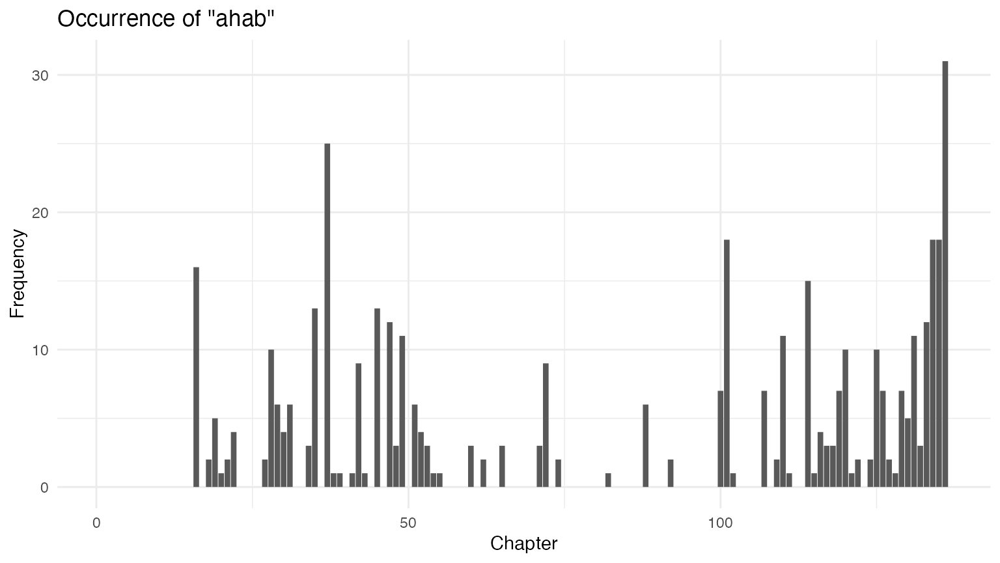
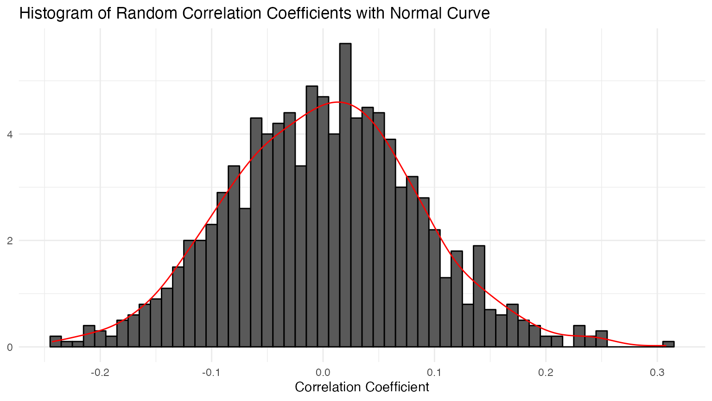

Replication: Text Analysis with R for Students of Literature
Kenneth Benoit, Stefan Müller, and Paul Nulty
Source:vignettes/pkgdown/replication/digital-humanities.Rmd
digital-humanities.RmdIn this vignette we show how the quanteda package can be used to replicate the analysis from Matthew Jockers’ book Text Analysis with R for Students of Literature (London: Springer, 2014). Most of the Jockers book consists of loading, transforming, and analyzing quantities derived from text and data from text. Because quanteda has built in most of the code to perform these data transformations and analyses, it makes it possible to replicate the results from the book with far less code. Throughout this vignette, we name objects based on Jockers’ book, but follow the quanteda style guide.
In what follows, each section corresponds to the respective chapter in the book.
1 R Basics
Our closest equivalent is simply:
install.packages("quanteda")
install.packages("readtext")But if you are reading this vignette, than chances are that you have already completed this step.
2 First Foray
2.1 Loading the first text file
We can load the text from Moby Dick using the readtext package, directly from the Project Gutenberg website.
library(readtext)
data_char_mobydick <- texts(readtext("http://www.gutenberg.org/cache/epub/2701/pg2701.txt"))
names(data_char_mobydick) <- "Moby Dick"The readtext() function from the readtext package loads the text files into a data.frame object. We can access the text from a data.frame object (and also, as we will see, a corpus class object), using the texts() or the View() method. Here we will display just the first 75 characters, to prevent a massive dump of the text of the entire novel. We do this using the stri_sub() function from the stringi package, which shows the 1st through the 75th characters of the texts of our new object data_char_mobydick. Because we have not assigned the return from this command to any object, it invokes a print method for character objects, and is displayed on the screen.
## [1] "The Project Gutenberg EBook of Moby Dick; or The Whale, by Herman Melville\n"2.2 Separate content from metadata
The Gutenburg edition of the text contains some metadata before and after the text of the novel. The code below uses the regexec and substring functions to separate this from the text.
# extract the header information
(start_v <- stri_locate_first_fixed(data_char_mobydick, "CHAPTER 1. Loomings.")[1])## [1] 23018
(end_v <- stri_locate_last_fixed(data_char_mobydick, "orphan.")[1])## [1] 1216393Here, we found the character index of the beginning and end of the novel, rather than counting the lines as in the book, but the result will be very similar. If we want to verify that “orphan.” is the end of the novel, we can use the kwic() function:
## Keyword-in-context with 1 match.
## [Moby Dick, 253627] children, only found another | orphan |
##
## . End of Project Gutenberg'sIf we want to count the number of lines, we can do so by counting the newlines in the text.
stri_count_fixed(data_char_mobydick, "\n")## [1] 22107To measure just the number lines in the novel itself, without the metadata, we can subset the text from the start and end of the novel part, as identified above.
stri_sub(data_char_mobydick, from = start_v, to = end_v) %>%
stri_count_fixed("\n")## [1] 21206To trim the non-book content, we use stri_sub() to extract the text between the beginning and ending indexes found above:
## [1] 1## CHAPTER 1. Loomings.
##
##
## Call me Ishmael. Some years ago--never mind how long precisely--having2.3 Reprocessing the content
We begin processing the text by converting to lower case. quanteda’s *_tolower() functions work like the built-in tolower(), with an extra option to preserve upper-case acronyms when detected. For character objects, we use char_tolower():
# lowercase text
novel_lower_v <- char_tolower(novel_v)quanteda’s tokens() function splits the text into words, with many options available for which characters should be preserved, and which should be used to define word boundaries. The default behaviour works similarly to splitting on the regular expression for non-word characters (\W as in the book), but it much smarter. For instance, it does not treat apostrophes as word boundaries, meaning that 's and 't are not treated as whole words from possessive forms and contractions.
We will skip straight to getting the character vector of tokens:
moby_word_v <- tokens(novel_lower_v, remove_punct = TRUE) %>% as.character()
(total_length <- length(moby_word_v))## [1] 209999
moby_word_v[1:10]## [1] "chapter" "1" "loomings" "call" "me" "ishmael"
## [7] "some" "years" "ago" "never"
moby_word_v[99986] ## [1] "in"
moby_word_v[c(4,5,6)]## [1] "call" "me" "ishmael"## [1] 2030 2060 2203 2415 4048 42112.4 Beginning the analysis
The code below uses the tokenized text to the occurrence of the word whale. To include the possessive form whale’s, we may sum the counts of both forms, count the keyword-in-context matches by regular expression or glob. A glob is a simple wildcard matching pattern common on Unix systems – asterisks match zero or more characters.
Note that the counts below do not match those in the book, due to differences in how the book has split on any non-word character, while quanteda’s tokenizer splits on a more comprehensive set of “word boundaries”. quanteda’s tokens() function by default does not remove punctuation or numbers (both defined as “non-word” characters) by default. To more closely match the counts in the book, we have removed punctuation.
## [1] 908
# total occurrences of "whale" including possessive
length(moby_word_v[which(moby_word_v == "whale")]) + length(moby_word_v[which(moby_word_v == "whale's")])## [1] 1028## Warning: 'kwic.character()' is deprecated. Use 'tokens()' first.## [1] 908## Warning: 'kwic.character()' is deprecated. Use 'tokens()' first.## [1] 1565## Warning: 'kwic.character()' is deprecated. Use 'tokens()' first.## [1] 1028What fraction of the total words (excluding punctuation) in the novel are “whale”?
total_whale_hits / ntoken(novel_lower_v, remove_punct = TRUE) ## text1
## 0.004895261With ntype() we can calculate the size of the vocabulary – includes possessive forms, but excludes punctuation, symbols and numbers.
## [1] 18525
ntype(char_tolower(novel_v), remove_punct = TRUE)## text1
## 18525To quickly sort the word types by their frequency, we can use the dfm() command to create a matrix of counts of each word type – a document-frequency matrix. In this case there is only one document, the entire book.
# ten most frequent words
moby_dfm <- dfm(novel_lower_v, remove_punct = TRUE)## Warning: 'dfm.character()' is deprecated. Use 'tokens()' first.
head(moby_dfm, nf = 10)## Document-feature matrix of: 1 document, 10 features (0.00% sparse) and 0 docvars.
## features
## docs chapter 1 loomings call me ishmael some years ago never
## text1 172 2 1 54 628 19 608 91 35 203Getting the list of the most frequent 10 terms is easy, using textstat_frequency().
library("quanteda.textstats")
textstat_frequency(moby_dfm, n = 10) ## feature frequency rank docfreq group
## 1 the 14173 1 1 all
## 2 of 6446 2 1 all
## 3 and 6311 3 1 all
## 4 a 4605 4 1 all
## 5 to 4511 5 1 all
## 6 in 4071 6 1 all
## 7 that 2950 7 1 all
## 8 his 2495 8 1 all
## 9 it 2394 9 1 all
## 10 i 1976 10 1 allFinally, if we wish to plot the most frequent (50) terms, we can supply the results of textstat_frequency() to ggplot() to plot their frequency by their rank:
# plot frequency of 50 most frequent terms
library(ggplot2)
theme_set(theme_minimal())
textstat_frequency(moby_dfm, n = 50) %>%
ggplot(aes(x = rank, y = frequency)) +
geom_point() +
labs(x = "Frequency rank", y = "Term frequency")For direct comparison with the next chapter, we also create the sorted list of the most frequently found words using this:
sorted_moby_freqs_t <- topfeatures(moby_dfm, n = nfeat(moby_dfm))3 Accessing and Comparing Word Frequency Data
3.1 Accessing Word Data
We can query the document-frequency matrix to retrieve word frequencies, as with a normal matrix:
# frequencies of "he" and "she" - these are matrixes, not numerics
sorted_moby_freqs_t[c("he", "she", "him", "her")]## he she him her
## 1758 112 1058 330
# another method: indexing the dfm
moby_dfm[, c("he", "she", "him", "her")]## Document-feature matrix of: 1 document, 4 features (0.00% sparse) and 0 docvars.
## features
## docs he she him her
## text1 1758 112 1058 330
sorted_moby_freqs_t[1]## the
## 14173
sorted_moby_freqs_t["the"]## the
## 14173
# term frequency ratios
sorted_moby_freqs_t["him"] / sorted_moby_freqs_t["her"]## him
## 3.206061
sorted_moby_freqs_t["he"] / sorted_moby_freqs_t["she"]## he
## 15.69643Total number of tokens:
ntoken(moby_dfm)## text1
## 209999
sum(sorted_moby_freqs_t)## [1] 2099993.2 Recycling
Relative term frequencies:
sorted_moby_rel_freqs_t <- sorted_moby_freqs_t / sum(sorted_moby_freqs_t) * 100
sorted_moby_rel_freqs_t["the"]## the
## 6.74908
# by weighting the dfm directly
moby_dfm_pct <- dfm_weight(moby_dfm, scheme = "prop") * 100
dfm_select(moby_dfm_pct, pattern = "the")## Document-feature matrix of: 1 document, 1 feature (0.00% sparse) and 0 docvars.
## features
## docs the
## text1 6.74908Plotting the most frequent terms, replicating the plot from the book:
plot(sorted_moby_rel_freqs_t[1:10], type = "b",
xlab = "Top Ten Words", ylab = "Percentage of Full Text", xaxt = "n")
axis(1,1:10, labels = names(sorted_moby_rel_freqs_t[1:10]))
Plotting the most frequent terms using ggplot2:
textstat_frequency(moby_dfm_pct, n = 10) %>%
ggplot(aes(x = reorder(feature, -rank), y = frequency)) +
geom_bar(stat = "identity") + coord_flip() +
labs(x = "", y = "Term Frequency as a Percentage")
4 Token Distribution Analysis
4.1 Dispersion plots
A dispersion plot allows us to visualize the occurrences of particular terms throughout the text. The object returned by the kwic function can be plotted to display a dispersion plot. The quanteda textplot_ objects are based on ggplot2, so you can easily change the plot, for example by adding custom title.
# using words from tokenized corpus for dispersion
library("quanteda.textplots")
textplot_xray(kwic(novel_v, pattern = "whale")) +
ggtitle("Lexical dispersion")## Warning: 'kwic.character()' is deprecated. Use 'tokens()' first.## Warning: Use of `x$ntokens` is discouraged. Use `ntokens` instead.
To produce multiple dispersion plots for comparison, you can simply send more than one kwic() output to textplot_xray():
textplot_xray(
kwic(novel_v, pattern = "whale"),
kwic(novel_v, pattern = "Ahab")) +
ggtitle("Lexical dispersion")## Warning: 'kwic.character()' is deprecated. Use 'tokens()' first.
## Warning: 'kwic.character()' is deprecated. Use 'tokens()' first.## Warning: Use of `x$ntokens` is discouraged. Use `ntokens` instead.
4.2 Searching with regular expression
# identify the chapter break locations
chap_positions_v <- kwic(novel_v, phrase(c("CHAPTER \\d")), valuetype = "regex")$from## Warning: 'kwic.character()' is deprecated. Use 'tokens()' first.
head(chap_positions_v)## [1] 1 2554 4242 11127 13041 139084.2 Identifying chapter breaks
Splitting the text into chapters means that we will have a collection of documents, which makes this a good time to make a corpus object to hold the texts. Initially, we make a single-document corpus, and then use the char_segment() function to split this by the string which specifies the chapter breaks.
chapters_corp <-
corpus(data_char_mobydick) %>%
corpus_segment(pattern = "CHAPTER\\s\\d+.*\\n", valuetype = "regex")
summary(chapters_corp, 10)## Corpus consisting of 136 documents, showing 10 documents:
##
## Text Types Tokens Sentences pattern
## Moby Dick.1 917 2548 101 CHAPTER 1. Loomings.\n
## Moby Dick.2 651 1682 60 CHAPTER 2. The Carpet-Bag.\n
## Moby Dick.3 1744 6879 263 CHAPTER 3. The Spouter-Inn.\n
## Moby Dick.4 681 1908 54 CHAPTER 4. The Counterpane.\n
## Moby Dick.5 405 862 29 CHAPTER 5. Breakfast.\n
## Moby Dick.6 464 936 44 CHAPTER 6. The Street.\n
## Moby Dick.7 519 1078 40 CHAPTER 7. The Chapel.\n
## Moby Dick.8 478 1076 29 CHAPTER 8. The Pulpit.\n
## Moby Dick.9 1260 4250 166 CHAPTER 9. The Sermon.\n
## Moby Dick.10 658 1791 66 CHAPTER 10. A Bosom Friend.\nThe titles are automatically extracted into the pattern document variables, and the text of each chapter becomes the text of each new document unit. To tidy this up, we can remove the trailing \n character, using stri_trim_right(), since the \n is a member of the “whitespace” group.
docvars(chapters_corp, "pattern") <- stringi::stri_trim_right(docvars(chapters_corp, "pattern"))
summary(chapters_corp, n = 3)## Corpus consisting of 136 documents, showing 3 documents:
##
## Text Types Tokens Sentences pattern
## Moby Dick.1 917 2548 101 CHAPTER 1. Loomings.
## Moby Dick.2 651 1682 60 CHAPTER 2. The Carpet-Bag.
## Moby Dick.3 1744 6879 263 CHAPTER 3. The Spouter-Inn.For better reference, let’s also rename the document labels with these chapter headings:
4.4.5 barplots of whale and ahab
With the corpus split into chapters, we can use the dfm() function to create a matrix of counts of each word in each chapter – a document-frequency matrix.
# create a dfm
chap_dfm <- dfm(chapters_corp)## Warning: 'dfm.corpus()' is deprecated. Use 'tokens()' first.
# extract row with count for "whale"/"ahab" in each chapter
# and convert to data frame for plotting
whales_ahabs_df <- chap_dfm %>%
dfm_keep(pattern = c("whale", "ahab")) %>%
convert(to = "data.frame")
whales_ahabs_df$chapter <- 1:nrow(whales_ahabs_df)
ggplot(data = whales_ahabs_df, aes(x = chapter, y = whale)) +
geom_bar(stat = "identity") +
labs(x = "Chapter",
y = "Frequency",
title = 'Occurrence of "whale"')
ggplot(data = whales_ahabs_df, aes(x = chapter, y = ahab)) +
geom_bar(stat = "identity") +
labs(x = "Chapter",
y = "Frequency",
title = 'Occurrence of "ahab"')
The above plots are raw frequency plots. For relative frequency plots, (word count divided by the length of the chapter) we can weight the document-frequency matrix. To obtain expected word frequency per 100 words, we multiply by 100. To get a feel for what the resulting weighted dfm (document-feature matrix) looks like, you can inspect it with the head function, which prints the first few rows and columns.
rel_dfm <- dfm_weight(chap_dfm, scheme = "prop") * 100
head(rel_dfm)## Document-feature matrix of: 6 documents, 18,630 features (95.86% sparse) and 1 docvar.
## features
## docs call me ishmael .
## CHAPTER 1. Loomings. 0.03924647 0.9811617 0.07849294 3.139717
## CHAPTER 2. The Carpet-Bag. 0 0.3567182 0.23781213 2.675386
## CHAPTER 3. The Spouter-Inn. 0.01453700 0.6396279 0 3.299898
## CHAPTER 4. The Counterpane. 0 0.9958071 0 2.672956
## CHAPTER 5. Breakfast. 0 0.1160093 0 3.016241
## CHAPTER 6. The Street. 0 0.1068376 0 4.166667
## features
## docs some years ago -
## CHAPTER 1. Loomings. 0.43171115 0.03924647 0.07849294 1.0596546
## CHAPTER 2. The Carpet-Bag. 0.05945303 0.05945303 0.05945303 1.0701546
## CHAPTER 3. The Spouter-Inn. 0.24712894 0.05814799 0.01453700 0.9303678
## CHAPTER 4. The Counterpane. 0.05241090 0 0 0.9958071
## CHAPTER 5. Breakfast. 0.23201856 0 0 0.8120650
## CHAPTER 6. The Street. 0.10683761 0 0 0.3205128
## features
## docs never mind
## CHAPTER 1. Loomings. 0.1962323 0.03924647
## CHAPTER 2. The Carpet-Bag. 0 0.11890606
## CHAPTER 3. The Spouter-Inn. 0.1599070 0.04361099
## CHAPTER 4. The Counterpane. 0.1048218 0.05241090
## CHAPTER 5. Breakfast. 0.1160093 0
## CHAPTER 6. The Street. 0 0
## [ reached max_nfeat ... 18,620 more features ]
# subset dfm and convert to data.frame object
rel_chap_freq <- rel_dfm %>%
dfm_keep(pattern = c("whale", "ahab")) %>%
convert(to = "data.frame")
rel_chap_freq$chapter <- 1:nrow(rel_chap_freq)
ggplot(data = rel_chap_freq, aes(x = chapter, y = whale)) +
geom_bar(stat = "identity") +
labs(x = "Chapter", y = "Relative frequency",
title = 'Occurrence of "whale"')
5 Correlation
5.2 Correlation Analysis
Correlation analysis (and many other similarity measures) can be constructed using fast, sparse means through the textstat_simil() function. Here, we select feature comparisons for just “whale” and “ahab”, and convert this into a matrix as in the book. Because correlations are sensitive to document length, we first convert this into a relative frequency using dfm_weight().
dfm_weight(chap_dfm, scheme = "prop") %>%
textstat_simil(selection = c("whale", "ahab"), method = "correlation", margin = "features") %>%
as.matrix() %>%
head(2)## Warning: 'selection' is deprecated. Use 'y' instead.## whale ahab
## call 0.1203478 -0.1056476
## me -0.2503964 0.1642716With the ahab frequency and whale frequency vectors extracted from the dfm, it is easy to calculate the significance of the correlation.
5.4 Testing Correlation with Randomization
cor_data_df <- dfm_weight(chap_dfm, scheme = "prop") %>%
dfm_keep(pattern = c("ahab", "whale")) %>%
convert(to = "data.frame")
# sample 1000 replicates and create data frame
n <- 1000
samples <- data.frame(
cor_sample = replicate(n, cor(sample(cor_data_df$whale), cor_data_df$ahab)),
id_sample = 1:n
)
# plot distribution of resampled correlations
ggplot(data = samples, aes(x = cor_sample, y = ..density..)) +
geom_histogram(colour = "black", binwidth = 0.01) +
geom_density(colour = "red") +
labs(x = "Correlation Coefficient", y = NULL,
title = "Histogram of Random Correlation Coefficients with Normal Curve")
6 Measures of Lexical Variety
6.2 Mean word frequency
# length of the book in chapters
ndoc(chapters_corp)## [1] 136## [1] "CHAPTER 1. Loomings." "CHAPTER 2. The Carpet-Bag."
## [3] "CHAPTER 3. The Spouter-Inn." "CHAPTER 4. The Counterpane."
## [5] "CHAPTER 5. Breakfast." "CHAPTER 6. The Street."Calculating the mean word frequencies is easy:
## CHAPTER 1. Loomings. CHAPTER 2. The Carpet-Bag.
## 2548 1682
## CHAPTER 3. The Spouter-Inn. CHAPTER 4. The Counterpane.
## 6879 1908
## CHAPTER 5. Breakfast. CHAPTER 6. The Street.
## 862 936## CHAPTER 1. Loomings. CHAPTER 2. The Carpet-Bag.
## 2.778626 2.583717
## CHAPTER 3. The Spouter-Inn. CHAPTER 4. The Counterpane.
## 3.944381 2.801762
## CHAPTER 5. Breakfast. CHAPTER 6. The Street.
## 2.128395 2.0172416.3 Extracting Word Usage Means
Since the quotient of the number of tokens and number of types is a vector, we can simply feed this to plot() using the pipe operator:

For the scaled plot:
6.4 Ranking the values
mean_word_use_m <- (ntoken(chapters_corp) / ntype(chapters_corp))
sort(mean_word_use_m, decreasing = TRUE) %>% head()## CHAPTER 54. The Town-Ho's Story. CHAPTER 135. The Chase.--Third Day.
## 4.129814 4.112832
## CHAPTER 16. The Ship. CHAPTER 3. The Spouter-Inn.
## 4.015863 3.944381
## CHAPTER 32. Cetology. CHAPTER 64. Stubb's Supper.
## 3.524490 3.4519146.5 Calculating the TTR
Measures of lexical diversity can be estimated using textstat_lexdiv(). The TTR (Type-Token Ratio), a measure used in section 6.5, can be calculated for each document of the dfm.
dfm(chapters_corp) %>%
textstat_lexdiv(measure = "TTR") %>%
head(n = 10)## Warning: 'dfm.corpus()' is deprecated. Use 'tokens()' first.## document TTR
## 1 CHAPTER 1. Loomings. 0.3824989
## 2 CHAPTER 2. The Carpet-Bag. 0.4295676
## 3 CHAPTER 3. The Spouter-Inn. 0.2803147
## 4 CHAPTER 4. The Counterpane. 0.3954189
## 5 CHAPTER 5. Breakfast. 0.5101215
## 6 CHAPTER 6. The Street. 0.5358025
## 7 CHAPTER 7. The Chapel. 0.5095745
## 8 CHAPTER 8. The Pulpit. 0.4846885
## 9 CHAPTER 9. The Sermon. 0.3310075
## 10 CHAPTER 10. A Bosom Friend. 0.39820177 Hapax Richness
Another measure of lexical diversity is Hapax richness, defined as the number of words that occur only once divided by the total number of words. We can calculate Hapax richness very simply by using a logical operation on the document-feature matrix, to return a logical value for each term that occurs once, and then sum these to get a count.
## CHAPTER 1. Loomings. CHAPTER 2. The Carpet-Bag.
## 609 437
## CHAPTER 3. The Spouter-Inn. CHAPTER 4. The Counterpane.
## 1084 464
## CHAPTER 5. Breakfast. CHAPTER 6. The Street.
## 276 341
# as a proportion
hapax_proportion <- rowSums(chap_dfm == 1) / ntoken(chap_dfm)
head(hapax_proportion)## CHAPTER 1. Loomings. CHAPTER 2. The Carpet-Bag.
## 0.2390110 0.2598098
## CHAPTER 3. The Spouter-Inn. CHAPTER 4. The Counterpane.
## 0.1575810 0.2431866
## CHAPTER 5. Breakfast. CHAPTER 6. The Street.
## 0.3201856 0.3643162To plot this:

8 Do it KWIC
For this, and the next chapter, we simply use quanteda’s excellent kwic() function. To find the indexes of the token positions for “gutenberg”, for instance, we use the following, which returns a data.frame with the name from indicating the index position of the start of the token match:
gutenberg_kwic <- kwic(data_char_mobydick, pattern = "gutenberg")## Warning: 'kwic.character()' is deprecated. Use 'tokens()' first.
head(gutenberg_kwic$from, 10)## [1] 3 52 108 253650 253799 253910 253957 254145 254261 2543599 Do it KWIC (Better)
This is going to be super easy since we don’t need to reinvent the wheel here, since kwic() already does all that we need.
Let’s create a corpus containing Moby Dick but also Jane Austen’s Sense and Sensibility.
data_char_senseandsensibility <- texts(readtext("http://www.gutenberg.org/files/161/161-0.txt"))
names(data_char_senseandsensibility) <- "Sense and Sensibility"
litcorpus <- corpus(c(data_char_mobydick, data_char_senseandsensibility))Now we can use kwic() to find out where in each novel this occurred:
## Keyword-in-context with 17 matches.
## [Moby Dick, 16994] all over like a Newfoundland | dog |
## [Moby Dick, 31496] was seen swimming like a | dog |
## [Moby Dick, 59413] last. - Down, | dog |
## [Moby Dick, 59514] not tamely be called a | dog |
## [Moby Dick, 60031] didn't he call me a | dog |
## [Moby Dick, 86276] sacrifice of the sacred White | Dog |
## [Moby Dick, 124777] life that lives in a | dog |
## [Moby Dick, 124873] the sagacious kindness of the | dog |
## [Moby Dick, 158480] " The ungracious and ungrateful | dog |
## [Moby Dick, 158520] Give way, greyhounds! | Dog |
## [Moby Dick, 169781] to the whale that a | dog |
## [Moby Dick, 192916] or the Ram - lecherous | dog |
## [Moby Dick, 196440] . ( Bunger, you | dog |
## [Moby Dick, 196913] die in pickle, you | dog |
## [Moby Dick, 197537] Ahab, and like a | dog |
## [Moby Dick, 239480] air as a sagacious ship's | dog |
## [Sense and Sensibility, 78119] fellow! such a deceitful | dog |
##
## just from the water,
## , throwing his long arms
## , and kennel!"
## , sir.""
## ? blazes! he called
## was by far the holiest
## or a horse. Indeed
## ? The accursed shark alone
## !" cried Starbuck;
## to it!""
## does to the elephant;
## , he begets us;
## , laugh out! why
## ; you should be preserved
## , strangely snuffing;"
## will, in drawing nigh
## ! It was only theWe can plot this easily too, as a lexical dispersion plot. By specifying the scale as “absolute”, we are looking at absolute token index position rather than relative position, and therefore we see that Moby Dick is nearly twice as long as Sense and Sensibility.
textplot_xray(dogkwic, scale = "absolute")## Warning: Use of `x$ntokens` is discouraged. Use `ntokens` instead.
11 Clustering
Chapter 11 describes how to detect clusters in a corpus. While the book uses the XMLAuthorCorpus, we describe clustering using U.S. State of the Union addresses included in the quanteda.corpora package. We trim the corpus with dfm_trim() by keeping only those words that occur at least five times in the corpus and in at least three speeches.
library(quanteda.corpora)
pres_dfm <- tokens(corpus_subset(data_corpus_sotu, Date > "1980-01-01"), remove_punct = TRUE) %>%
tokens_wordstem("en") %>%
tokens_remove(stopwords("en")) %>%
dfm() %>%
dfm_trim(min_termfreq = 5, min_docfreq = 3)
# hierarchical clustering - get distances on normalized dfm
pres_dist_mat <- dfm_weight(pres_dfm, scheme = "prop") %>%
textstat_dist(method = "euclidean") %>%
as.dist()
# hiarchical clustering the distance object
pres_cluster <- hclust(pres_dist_mat)
# label with document names
pres_cluster$labels <- docnames(pres_dfm)
# plot as a dendrogram
plot(pres_cluster, xlab = "", sub = "",
main = "Euclidean Distance on Normalized Token Frequency")
13 Topic Modelling
Finally, Jockers’ book introduces topic modelling of a corpus and the visualisation through wordclouds. We can easily apply functions from the topicmodels package by using quanteda’s convert() function. In our example, we use the Irish budget speeches from 2010 (data_corpus_irishbudget2010) and classify 20 topics using Latent Dirichlet Allocation.
data(data_corpus_irishbudget2010, package = "quanteda.textmodels")
dfm_speeches <- tokens(data_corpus_irishbudget2010, remove_punct = TRUE, remove_numbers = TRUE) %>%
tokens_remove(stopwords("en")) %>%
dfm() %>%
dfm_trim(min_termfreq = 4, max_docfreq = 10)
library(topicmodels)
LDA_fit_20 <- convert(dfm_speeches, to = "topicmodels") %>%
LDA(k = 20)
# get top five terms per topic
get_terms(LDA_fit_20, 5)## Topic 1 Topic 2 Topic 3 Topic 4 Topic 5
## [1,] "measures" "kind" "scheme" "welfare" "welfare"
## [2,] "million" "imagination" "reduction" "support" "child"
## [3,] "welfare" "policies" "million" "confidence" "high"
## [4,] "spending" "wit" "international" "increased" "system"
## [5,] "recent" "create" "system" "research" "stimulus"
## Topic 6 Topic 7 Topic 8 Topic 9 Topic 10 Topic 11
## [1,] "taoiseach" "welfare" "taoiseach" "care" "system" "taoiseach"
## [2,] "stimulus" "placing" "fine" "welfare" "welfare" "employees"
## [3,] "recession" "future" "gael" "per" "fianna" "rate"
## [4,] "necessary" "levy" "may" "allowance" "fáil" "referred"
## [5,] "earning" "climate" "irish" "hit" "taxation" "debate"
## Topic 12 Topic 13 Topic 14 Topic 15 Topic 16 Topic 17
## [1,] "alternative" "irish" "strategy" "fianna" "million" "child"
## [2,] "citizenship" "pension" "failed" "fáil" "investment" "benefit"
## [3,] "wealth" "create" "system" "national" "back" "bank"
## [4,] "adjustment" "review" "vision" "irish" "continue" "today"
## [5,] "breaks" "details" "change" "support" "future" "day"
## Topic 18 Topic 19 Topic 20
## [1,] "society" "levy" "fianna"
## [2,] "per" "carbon" "fáil"
## [3,] "benefit" "change" "side"
## [4,] "day" "harsh" "level"
## [5,] "nama" "million" "third"